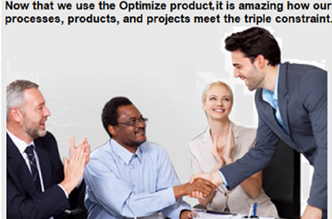

Management Tool of Choice Imagine you’re an NBA basketball team coach. You’re down by a point with eight seconds to go, and your team has the ball. Your point guard calls time out, and you have to decide who will shoot the final shot. If you win, your team makes the playoffs; if you lose, you can pack your bags for Maui. Your best player, your point guard, is having a terrible game. He is two for twelve from the field, but he is your best ball handler and usually your best shooter. Your former All-Pro forward has had a sensational game, twenty-six points on ten for thirteen from the field. Yet, this season he hasn’t done well under pressure. A tough decision, if you win, you’re a hero, and if you lose, you may be looking for your next coaching gig. Now imagine you’re the CEO of a $250 million a year high technology company. The competition for your automated home environment system is becoming very competitive. To date, you seem to be near the industry norm in conducting successful projects. Nearly sixty percent of your projects satisfy the triple constraint of schedule, cost, and scope. Your staff working on existing products and processes are reasonably productive, you think. You hear about a tool from a tennis buddy in a different industry that solves many of the problems seeming to cause your company’s failures. Yet, the company providing the software tool isn’t Microsoft, Google, Amazon, IBM, or Oracle. They are a start-up that launched their product this year. Your decision will affect your tenure with the organization at next year’s board meeting. Do you have the audacity to try a new methodology and product which your friend said cut their costs and failures in half? The new tool, Optimize Workflow, improved their productivity by over 38%? If not interested, stop reading. If interested, learn a little more. Optimize Workflow has spent the last dozen years researching and developing a product that solves most of the challenges causing the activities within your organization not to be as successful as expected by the stakeholders and you. The product is installable on your servers, is accessible via the cloud, and remotely on cell phones. If you want to learn how Optimize Workflow (Optimized Processes, Products, Projects Integrated Technology) continuously assures your organization has selected the right processes, products, and projects, supports creating unambiguous requirements, supports creating quality schedules that consistently lead to successful deliveries, then read on? Are you interested in measuring your staff’s productivity, ensuring the best available labor resources are daily assigned to your most critical tasks, optimizing your labor resource allocation, then give us a call? Or stay with your existing tools and suffer excessive costs, schedule overruns, and efforts that do not fulfill their requirements. Otherwise, give us a call for a live demonstration.  Then give us a call for a demonstration. Or stay with your existing tools and suffer excessive costs, schedule overruns, and efforts that do not fulfill their requirements. Function Challenge Solution Analysis Ambiguous requirements and poor schedules cause cost overruns, delayed deliverables, and inferior quality results. The Optimize component automatically analyzes requirements and schedules to assure an organization produces quality results on time and within budget. Cloud Access All organization information needs to be accessible. The Optimize Workflow, Inc. product must be accessible on the cloud and via mobile devices The Optimize component supports controlled access via popular cloud services and mobile devices. Issue Resolution System Organizations need to be able to report, update and delete issues, enhancements, and questions. The Optimize component provides an online issue reporting system to assure all involved individuals know the issue’s status and who is responsible for each issue’s resolution. Measurement The Optimize component must measure each staff member’s performance for each supported labor category. TThe six-sigma quote, “What gets measured gets done,” rings true about how individuals perform. The Optimize component measures the performance of team members for each task they perform. Measuring improves each staff member’s performance. Mobile Access Users must access essential status information from cell phones and laptops. The Optimize component supports access to crucial Optimize and Marketplace component information from their cell phones and mobile devices. Optimal Resource Allocation The Optimize product optimizes using an organization’s labor resources for all activities The Optimize component daily assigns the most productive individuals for each supported labor category to the most critical tasks. Processes, Products, Projects, and Issues Organizations need to support their projects, products, and process activities for their entire organization. Organizations also need to integrate the effort associated with their issues with their process, product, and project activities The Optimize component measures all process, product, project, and issue tasks to improve an organization’s workforce. It assigns your most productive staff members daily to your organization’s most essential tasks while considering relevant process, product, project, and issue task experience for the needed task’s labor categories. Scheduling Managers need a tool to create and maintain schedules to track progress. The Optimize component supports schedules, critical paths, Gantt charts, and numerous tools for simplifying creating, reporting, and maintaining schedules. Status Reports Managers and executives need to report progress and continuously resolve problems. The Optimize component supports daily progress reports and dashboards showing the progress (health) of processes, products, projects, and issues. Templates Creating near-identical requirements and schedules must be simplified for processes, products, and projects. The Optimize component supports templates that simplify creating requirements and schedules for processes, products, and projects. Testing Organizations need to assure process, product, and project requirements are thoroughly tested. The Optimize component supports comprehensive testing of supported processes, products, and projects. To see a live OP3IT demonstration or a web conference, call or email us at 310-287-0800 or MKT@OP3IT.com. Back to Home